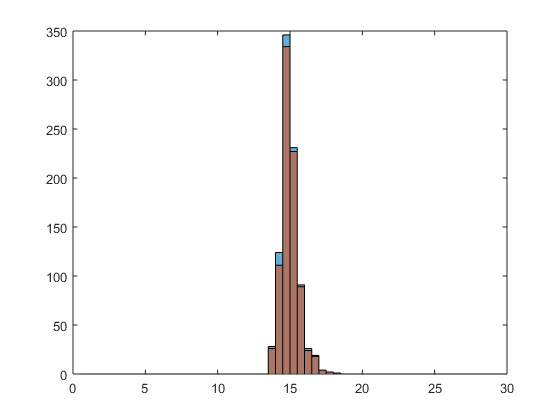
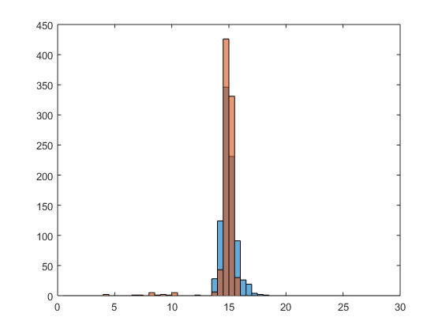

MCB111: Mathematics in Biology (Fall 2024)
week 04:
(this homework has 20p in total)
The main code for this homework is attached here: Code
Two functions to do quick hypothesis testing: test-higher and test-lower
Question 1
part 1: Visually assessing the data
We can see that a handful of dopaminergic neurons appear to fire at greater frequencies ~20-26Hz when rewards are less than expected (Data.1) than when rewards are as expected (Data.0). Meanwhile, the majority of neurons fire similarly to those in Data.1 and appear to be even more tightly distributed about the same mean at ~15Hz.
(2p for histogram plots, 2p for observations)
part 2: statistical testing
After establishing a sense of the data, we can start placing thresholds and determining how well they distinguish the neurons that behave uniquely in Data.1. For a given cutoff of the frequency, we can assess the splitting of the data (and number of neurons classified as unique) with a few convenient metrics: the p-value, false discovery rate, and sensitivity.
For instance, we might observe that Data.1 seems to have more neurons firing at 17Hz or higher, and so choose to set a cut-off of 17Hz for the identification of neurons that correspond to the smaller reward response. With the p-value, we ask “under the null, what is the probability of measuring a frequency above the cutoff?”
step 1: set a threshold
We will consider the condition of expected reward as our null. So to approximate the probability of a null measurement falling above the cutoff, Let’s consider the cutoff:
\[cutoff^* = 17\]Which is equivalent to \(sc*\) mentioned in lecture.
step 2: calculate p value
In this case, the null dataset is “Data.0”, therefore:
\[n_0^* = sum(Data.0 >= cutoff^*);\]% total instances of Data.0 values greater than 17 -> 19
Therefore the definition of \(p^*\), where N_0 is total sample size of Data.0:
\[p^* = n_0^* / N_0 = sum(Data.0 >= cutoff^*) / N_0\]% p value given cutoff=17 -> 0.008168
step 3: calculate F*
The dataset you want to test is “Data.1”, therefore the F* should be:
\[F^* = sum(Data.1>=cutoff^*);\]% totals the instances of data.1 values greater than 17 -> 7
At the same time, we can also calculate the sensitivity, where \(N_1\) is sample size of Data.1:
\[Sensitivity = F^* / N_1 = sum(Data.1>=cutoff^*) / N_1\]% sensitivity given cutoff=17 -> 7 / 872 = 0.021789
step 4: FDR
Now we are ready to calculate FDR. Since Data.1 is the dataset you want to test the \(N\) in definition of FDR should be size of Data.1:
\[FDR = \frac{N_1 * p^*}{F^*}\]% FDR given cutoff=17 -> 0.37487
Using Data.0 as our null hypothesis. Cutting Data.1 at 17Hz, identifies 19 neurons as firing differently than the null with a p-value of 0.008168, false discovery rate of 37.5%, and sensitivity of 2.18%.
You can essentially increase this threshold and the result is as follows:
fr F n0 p FDR Sensitivity
____ __ __ _________ ________ ___________
16 25 52 0.060677 2.1164 0.02867
16.2 23 41 0.047841 1.8138 0.026376
16.4 19 29 0.033839 1.553 0.021789
16.6 19 20 0.023337 1.0711 0.021789
16.8 19 13 0.015169 0.69619 0.021789
17 19 7 0.008168 0.37487 0.021789
17.2 19 7 0.008168 0.37487 0.021789
17.4 19 3 0.0035006 0.16066 0.021789
17.6 18 2 0.0023337 0.11306 0.020642
17.8 18 1 0.0011669 0.056528 0.020642
18 18 1 0.0011669 0.056528 0.020642
By increasing our cutoff to 17.8Hz we can improve our p-value to 0.00117 and FDR to 5.65% without much penalty to our sensitivity, now 2.06%.
This cutoff seems to only allow us to identify a small fraction of neurons in the low-reward response. However, choosing 17.8Hz allows us to be confident that the neurons we measure above the cutoff are unique from the null response. If we chose a lower cutoff in order to improve our sensitivity, the meaningfulness of our distinction would quickly be reduced as the false discovery rate rapidly rises. In these experiments, it is therefore important to choose a high cutoff 17.8Hz or greater, and to take many measurements in order to ensure we observe neurons within our sensitivity.
(4p for implementation, 2p for reasonable p-values, 2p for observations)
Question 2
part 1: Draw histograms
Here, we repeat the process of part A and part B in order to identify and evaluate reasonable cutoffs for distinguishing the new data from the null.

Equivalently bined histograms for Data.0 (blue) and Data.2 (red)

Equivalently bined histograms for Data.0 (blue) and Data.3 (red)
part 2: any observation?
Data.2
It appears that Data.2 is distributed perfectly the same way as Data.0, only having slightly fewer samples. We can try to do the same type of analysis:
Test 1: whether neurons in data.2 have higher frequency
fr F n0 p FDR Sensitivity
____ __ __ _________ ______ ___________
16 49 52 0.060677 1.0352 0.058612
16.2 39 41 0.047841 1.0255 0.046651
16.4 27 29 0.033839 1.0478 0.032297
16.6 19 20 0.023337 1.0268 0.022727
16.8 12 13 0.015169 1.0568 0.014354
17 7 7 0.008168 0.9755 0.0083732
17.2 7 7 0.008168 0.9755 0.0083732
17.4 3 3 0.0035006 0.9755 0.0035885
17.6 2 2 0.0023337 0.9755 0.0023923
17.8 1 1 0.0011669 0.9755 0.0011962
18 1 1 0.0011669 0.9755 0.0011962
The False Discover Rate is always high in all chosen cutoffs, therefore the neurons in data.2 don’t have higher frequencies.
Test 2: whether neurons in data.2 have lower frequency
fr F n0 p FDR Sensitivity
______ ___ ___ _________ _______ ___________
13 0 0 0 NaN 0
13.333 0 0 0 NaN 0
13.667 3 3 0.0035006 0.9755 0.0035885
14 26 28 0.032672 1.0505 0.0311
14.333 74 79 0.092182 1.0414 0.088517
14.667 219 229 0.26721 1.02 0.26196
15 471 485 0.56593 1.0045 0.5634
15.333 643 659 0.76896 0.99977 0.76914
15.667 736 754 0.87981 0.99935 0.88038
16 787 805 0.93932 0.99781 0.94139
Therefore similarly, neurons in data.2 don’t have lower frequencies compared to data.0. There is no evidence that neurons in data.2 fire differently compared with data.0.
Data.3
According to histogram, there are some neurons in data.3 has lower frequency compared with data.0. To verify this observation we tested whether neurons in data.3 has lower frequency:
fr F n0 p FDR Sensitivity
__ ___ ___ ________ _______ ___________
6 2 0 0 0 0.0023392
7 3 0 0 0 0.0035088
8 4 0 0 0 0.0046784
9 10 0 0 0 0.011696
10 13 0 0 0 0.015205
11 18 0 0 0 0.021053
12 18 0 0 0 0.021053
13 19 0 0 0 0.022222
14 25 28 0.032672 1.1174 0.02924
15 494 485 0.56593 0.97949 0.57778
It turns out that \(13\) is a pretty good cutoff. This result indicates that a certain subgroup of neurons in data.3 have lower firing frequencies compared with data.0.
(2p for histograms, or any other kinds of visualization, 2p for p-values/FDR/sensitivity, 4p for valid claims about data.2 and data.3. If there are valid conclusions but no statistical testing at all, 2p will be removed)